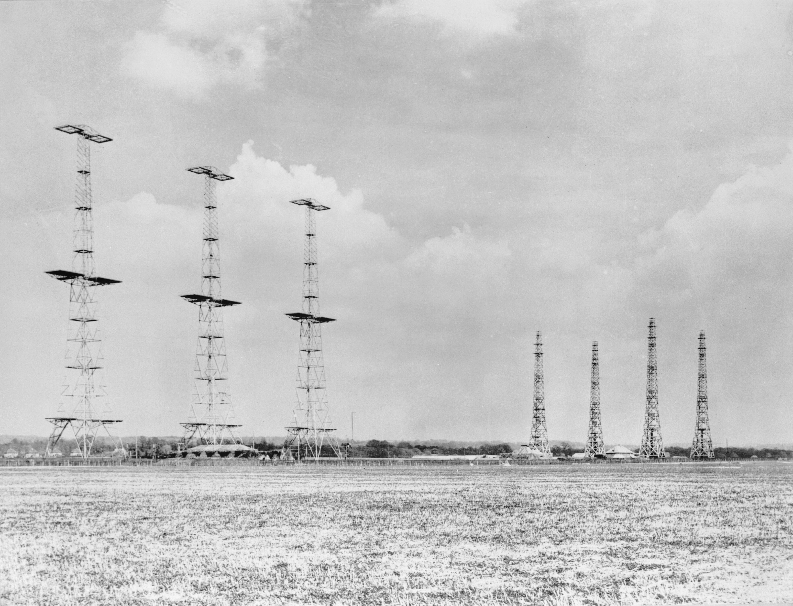

What is Radar
Radar is the technonlogy used to send out radio waves and their reflections off metal objects to dectect them. This is done with multiple towers for both receiving and trasmitting the radio waves.
How Was it Discovered
It was first discovered in the late 19th century that radio waves were reflected by metal. Pysicist Robert Watson-Watt believe this could be used to detect aircrafts. In February of 1935 this was successfully tested and more testing and development was done before becoming operational in 1939.
Why Was it Important
Radar was very important for Britain because it helped detect enemy vehicles before they arrived just by sending out radio waves. It was stationed on the east coast of Britain in 1939 because they believed it was vulnerable to be attacked by the Axis Powers.
Chain Home radar installation at Poling, Sussex, 1945

Source: https://www.iwm.org.uk/collections/item/object/205193313